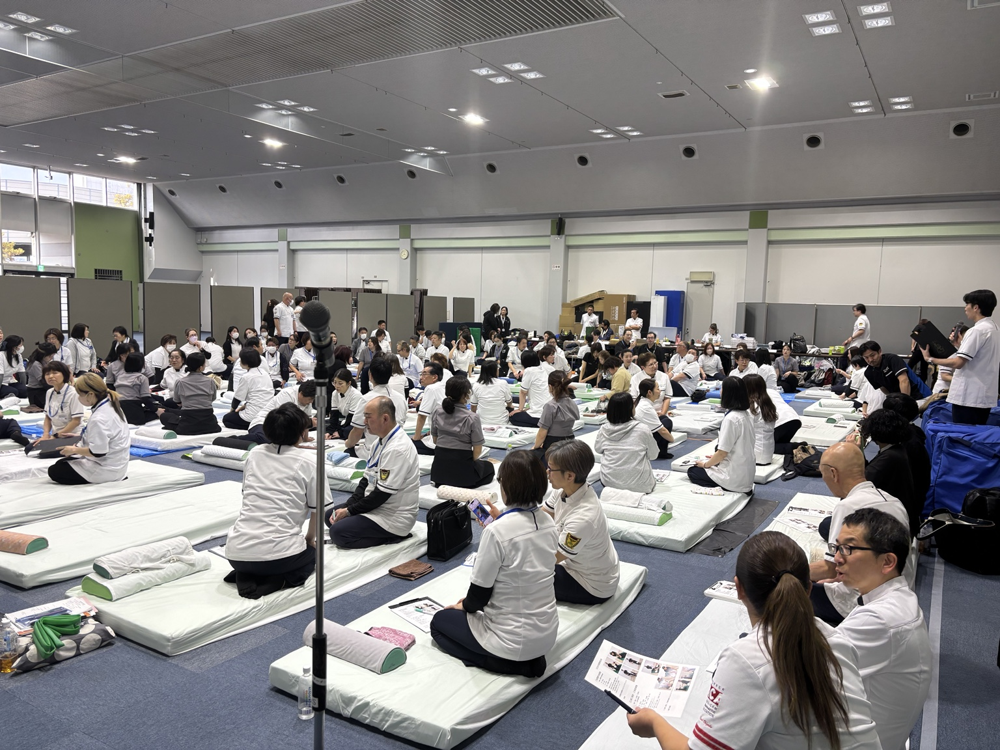

こんなこと、思ったことありませんか？
家族が「腰が痛い」「肩がつらい」と言ったとき、
自分にも何かできたらいいのに。
自分の身体がつらいとき、
どうしてここが痛くなるんだろう？
姿勢や骨盤ってよく聞くけれど、
身体とどう関係しているんだろう？
身体のことをもっと知って、
自分や家族の健康に役立てたい。
そして、せっかく学ぶなら——
いつか誰かにも喜んでもらえたら。
それが仕事になったら、おもしろそう。
身体は、思っている以上につながっている。
たとえば、膝がつらいとき。
「膝が悪いのかな？」
と思いますよね。
でも身体を見ていくと、
膝だけではなく、
骨盤や股関節、姿勢、身体の使い方など、
いろいろなところに目を向けます。
肩がつらいから、肩だけ。
腰がつらいから、腰だけ。
ではなく、
「身体全体では、どうなっているんだろう？」
と考えていく。
さらに、運動・栄養・睡眠など、
毎日の生活も身体を考えるうえで大切です。
ただ技術を覚えるだけではなく、
身体の仕組みを知って、見て、考えられるようになる。
これが、私がカイロを学んで
おもしろいと思ったところです。
知識や技術が、誰かの「できた！」に変わる。
身体について学んで、
少しずつできることが増えていく。
そして、その知識や技術が
誰かの役に立ったとき。
「楽になった」
「前より動きやすい」
「これができるようになった」
「ありがとう」
そんな言葉をもらえることがあります。
もちろん、身体の状態や変化は人それぞれ。
でも、
目の前の人が喜んでくれる。
その瞬間を一緒に喜べる。
私は、そこにこの仕事の面白さを感じています。
最初は自分や家族のために始めた学びが、
いつか誰かのために使えるものになっていく。
私も最初は、仕事にするつもりではありませんでした。
私はもともと、一級建築士として働いていました。
カイロとは、まったく違う世界です。
私自身、生まれつき両足の股関節に問題があり、
幼稚園に入る前までに5回の手術を経験しました。
歩けるようにはなったものの、
身体のことで悩むこともあり、
「手術をしているんだから、仕方ない」
そんなふうに思っていたこともあります。
カイロを学び始めたのも、
仕事にするためではありませんでした。
最初は、自分と家族の身体のため。
ところが学んでみると、
「身体って、おもしろい。」
骨盤や背骨、筋肉、姿勢。
そして運動・栄養・睡眠。
知らなかったことを知るたびに、
もっと知りたくなりました。
そして、自分や家族だけではなく、
いろいろな方の身体を見るようになって、
「ありがとう」
と喜んでもらえることが増えていきました。
それが、うれしかったんです。
もっと知りたい。
もっとできることを増やしたい。
そうやって学び続けていたら、
「好きで学んでいたことが、
人に喜んでもらえる仕事になっていました。」
現在は福津市で、
女性専用のカイロプラクティック院を開いて12年。
今度は私が、
「身体について学んでみたい」
と思った方の最初の一歩をお手伝いしています。
知れば知るほど、身体はおもしろい。

【身体を知る】
骨盤・背骨・筋肉・姿勢など、身体の仕組みを学びます。
【身体をみる】
姿勢や身体の動きを確認しながら、
「どこに負担がかかっているんだろう？」
と身体全体を見る視点を身につけていきます。
【実際にやってみる】
骨盤・腰・背中・肩・首など、
段階に合わせて技術を学び、実際に練習していきます。
【健康を守ることを学ぶ】
運動・栄養・睡眠など、毎日の生活習慣についても学びます。
そして、学びが進むと、
自分のため
↓
家族のため
↓
誰かのため
へ、できることが少しずつ広がっていきます。
施術する技術だけじゃない。「身体をどう見るか」を学べる。最初から、仕事にすると決めなくて大丈夫。
まずは知る。
やってみる。
「もっと知りたい」と思ったら、次へ。
段階を踏みながら学んでいけます。
無料姿勢講座＋説明会
0円
まずは自分の身体から。
姿勢チェックやAI姿勢診断を通して、
身体のつながりやカイロの考え方を体験します。
福津市・レディースカイロうららで開催／約60分／男女参加OK
1日で学ぶカラダ講座
10,000円
身体や姿勢について学びながら、
自分や家族にも活かせるケアを実際に体験します。
ここまでは、
「身体のことをもっと知りたい」
で大丈夫。
そして、
「もっと技術を身につけたい」
「人にも喜んでもらえるようになりたい」
「仕事としてやってみたい」
と思ったら、次の学びへ。

初級カイロ事業セミナー
418,000円
3泊4日
身体の基礎から、カイロの理論・検査・技術、
運動・栄養・睡眠などを学びます。
腰肩集中事業セミナー
198,000円
2泊3日
腰や肩について、さらに知識と技術を深めていきます。
初級＋腰肩をセットで受講する場合
通常616,000円
↓ 20,000円引き
596,000円
腰肩集中事業セミナー修了後から、有料施術ができるようになります。

その先も、中級・上級など、学びを続けていく道があります。
知る → できる → 喜んでもらえる → 仕事へ。最初から全部を決める必要はありません。
「もっと知りたい」
その気持ちに合わせて、一つずつ進んでいけば大丈夫です。
私にもできるかな？
身体の知識がなくても大丈夫？
大丈夫です。私自身も、もともとは一級建築士。
身体とはまったく違う分野から始めました。
今の仕事を続けながらでもいい？
最初から仕事を辞める必要はありません。
まず学んでみて、「もっとやってみたい」と思ったら、
その先を考えていけば大丈夫です。
子育て中でもできる？
私自身も、二人の娘を育てながら学び、仕事を続けてきました。
今の生活を全部変えてから始める必要はありません。
男性も参加できる？
はい。講座や学びは男女ともに参加できます。
※レディースカイロうららの店舗施術は女性専用です。
まずは、自分の身体を知るところから。

「カイロって何をするの？」
「身体を学ぶって、どんな感じ？」
「仕事にするかは分からないけど、
ちょっと興味がある」
そんな方のために、
まずは無料姿勢講座＋説明会を開催しています。
当日は、
-
① 自分の姿勢をチェック
AI姿勢診断などを使って、まずは自分の身体を見てみます。 -
② 身体のつながりを知る
骨盤や背骨、姿勢などが身体とどう関係しているのか、分かりやすくお話しします。 -
③ カイロを実際に体験
「聞くだけ」ではなく、実際にカイロに触れてみます。 -
④ 学び方・仕事について聞く
1日講座から初級・腰肩集中、その先の学びまで。
仕事として活動するまでの流れもお話しします。
- 福津市・レディースカイロうららで開催
- 約60分
- 参加無料
- 未経験OK
- 男女参加OK
開催日は、下の申込みフォームからご確認いただけます。
参加したからといって、
次の講座を受ける必要はありません。
まずは体験して、
「もっと知りたい」と思えるかどうか。
それを確かめに来てください。
Googleフォームが新しいタブで開きます
身体を知ることを、一緒に楽しめる人と出会いたい。
私は、最初からカイロを
仕事にしようと思っていたわけではありません。
自分や家族の身体のために学び始めて、
「身体って、こんなふうにつながっているんだ」
「もっと知りたい」
そう思ったことが始まりでした。
学べば学ぶほど、おもしろくなって、
できることが増えていく。
そして誰かに喜んでもらえるようになる。
私は、それがすごくうれしかったんです。
気がつけば、それが私の仕事になっていました。
だから私は、
「資格だけ取れればいい」ではなく、
身体のことをもっと知りたい人と出会いたい。
できることを増やしたい。
人に喜んでもらえることが好き。
そして仕事にするなら、
ちゃんと学んで、経験を重ねていきたい。
そんな方と、
一緒に身体のことを学んでいけたらと思っています。
最初の一歩は、「知ってみたい」で大丈夫。
仕事にするかどうかを、今決める必要はありません。
まず自分の身体を知ってみる。
カイロを体験してみる。
実際に私と話してみる。
そして、
「もっと知りたい」
と思ったら、そこから次へ進めばいい。
身体のことを知るって、おもしろい。それが仕事になったら、もっとおもしろい。